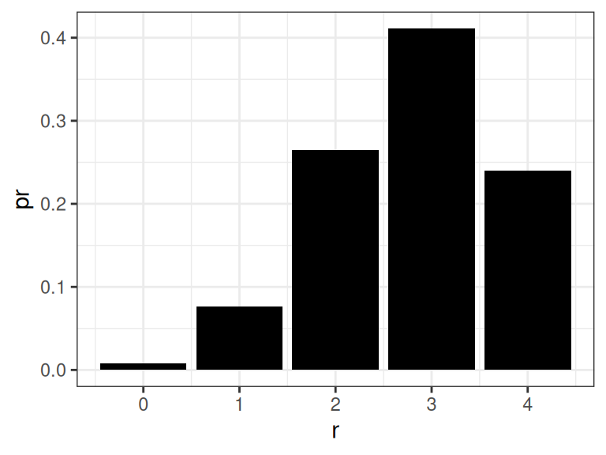
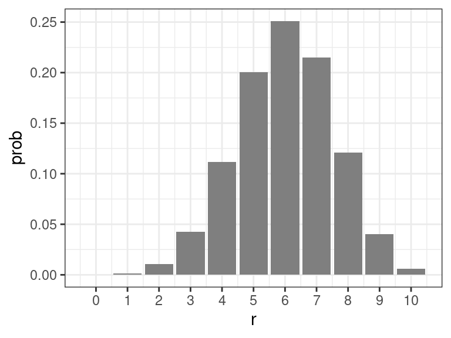
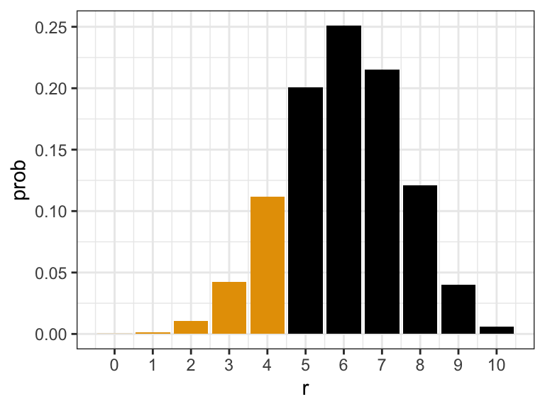
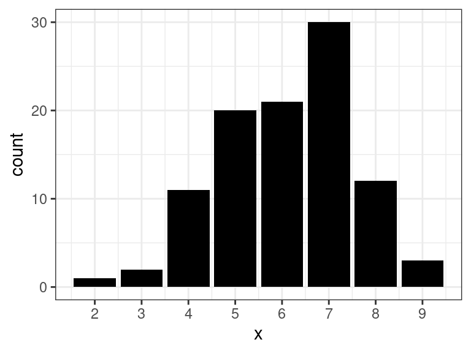
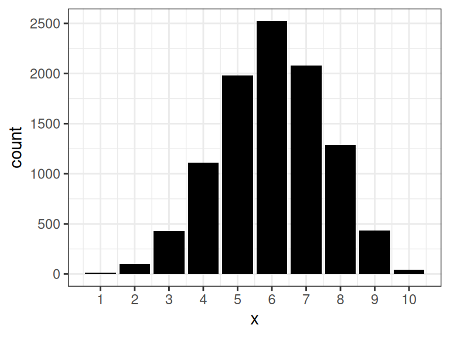
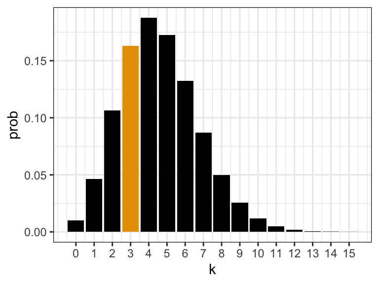
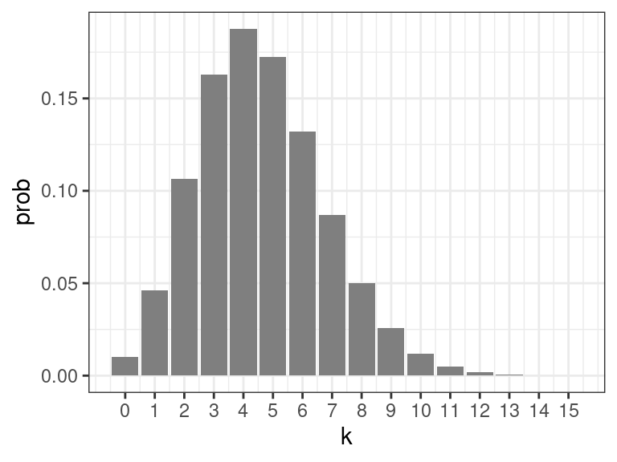
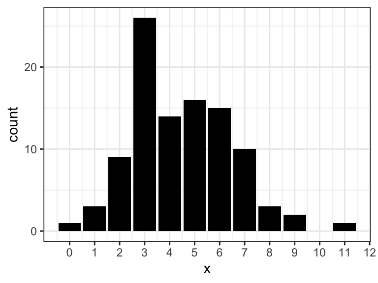
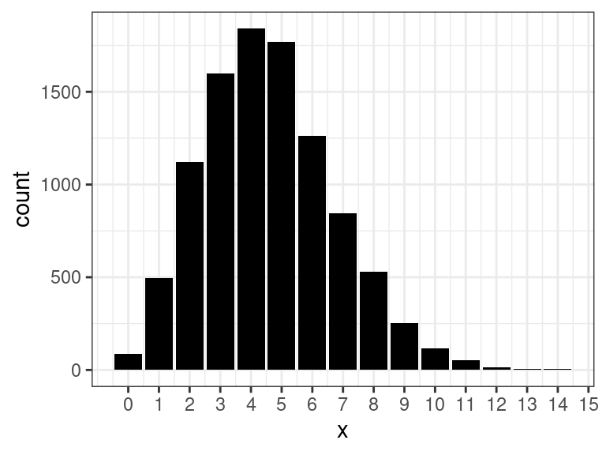

library(tidyverse)Discrete Probability Distributions
Provided Distribution
If given a probability mass function, can create a data frame of it
pmf <- tibble(r = 0:4,
pr = c(0.008, 0.076, 0.265, 0.411, 0.240)
)We can verify that the PMF sums to 1
sum(pmf$pr)[1] 1We can calculate the mean and variance like so
mu <- sum(pmf$r * pmf$pr)
mu[1] 2.799sigma2 <- sum((pmf$r - mu)^2 * pmf$pr)
sigma2[1] 0.8406You can get the CDF via cumsum()
pmf |>
mutate(cdf = cumsum(pr))# A tibble: 5 × 3
r pr cdf
<int> <dbl> <dbl>
1 0 0.008 0.008
2 1 0.076 0.084
3 2 0.265 0.349
4 3 0.411 0.76
5 4 0.24 1 We can plot it
ggplot(pmf, aes(x = r, y = pr)) +
geom_col(fill = "black")
Binomial Distribution
The PMF is
dbinom().About 60% of all white blood cells are neutrophils. If we observe 10 white blood cells, the probability of seeing 4 neutrophils is
\[ \binom{10}{4} 0.6^4 0.4^6 \]
dbinom(x = 4, size = 10, prob = 0.6)[1] 0.1115
The CDF is
pbinom():\[ Pr(X \leq x) = \sum_{r=0}^x\binom{10}{r} 0.6^r 0.4^{n-r} \]
pbinom(q = 4, size = 10, prob = 0.6)[1] 0.1662
The quantile function is
qbinom().\[ f(p) = \min(x) \text{ such that } p \leq Pr(X \leq x) \]
E.g., the quantile function applied at 0.55 is 6
qbinom(p = 0.55, size = 10, prob = 0.6)[1] 6because the CDF at 6 is above 0.55 and the CDF at 5 is below 0.55.
pbinom(q = 5, size = 10, prob = 0.6)[1] 0.3669pbinom(q = 6, size = 10, prob = 0.6)[1] 0.6177You generate random samples from the binomial distribution with
rbinom()x <- rbinom(n = 100, size = 10, prob = 0.6)
x <- rbinom(n = 10000, size = 10, prob = 0.6)
Exercise: The underlying incidence rate of chronic bronchitis in the first year of life is 0.05. What is the probability of obtaining at least 75 cases of chronic bronchitis in the first year of life among 1500 families?
- Exercise: Suppose a group of 100 women ages 60–64 received a new flu vaccine in 2004, and 5 of them died within the next year. Is this event unusual? According to life tables, the probability of death for this age group in the next year is 0.009. Calculate the probability that five or more such women would die under normal circumstances if the flu vaccine had no effect.
- What is the expected number of such women (out of 100) that we would expect to die in th next year?
Poisson Distribution
The PMF is
dpois().Number of deaths from typhoid-fever is over a 1-year period approximately Poisson with rate \(\lambda = 4.6\). The probability of exactly 3 deaths is
\[ e^{-4.6}\frac{4.6^3}{3!} \]
dpois(x = 3, lambda = 4.6)[1] 0.1631
The CDF is
ppois():\[ Pr(X \leq x) = \sum_{k=0}^{x}e^{-4.6}\frac{4.6^k}{k!} \]
ppois(q = 3, lambda = 4.6)[1] 0.3257
The quantile function is
qpois().\[ f(p) = \min(x) \text{ such that } p \leq Pr(X \leq x) \]
E.g., the quantile function applied at 0.55 is 5
qpois(p = 0.55, lambda = 4.6)[1] 5because the CDF at 5 is above 0.55 and the CDF at 4 is below 0.55.
ppois(q = 4, lambda = 4.6)[1] 0.5132ppois(q = 5, lambda = 4.6)[1] 0.6858You generate random samples from the poisson distribution with
rpois()x <- rpois(n = 100, lambda = 4.6)
x <- rpois(n = 10000, lambda = 4.6)
Poisson Approximation to Binomial
For \(n\) large, \(p\) small, and \(np\) intermediate, we have that if \(X \sim Binom(n, p)\) then we also have approximately that \(X \sim Pois(np)\).
Rule of thumb: \(n \geq 100\) and \(p \leq 0.01\)
Example:
n <- 100 p <- 0.01 tibble( Binom = dbinom(x = 0:5, size = n, prob = p), Pois = dpois(x = 0:5, lambda = n * p) )Binom Pois 0.37 0.37 0.37 0.37 0.18 0.18 0.06 0.06 0.01 0.02 0.00 0.00 You don’t use this anymore to actually calculate binomial probabilities, since computers do that efficiently without resorting to an approximation.
This is mostly useful in cases to justify using the Poisson.
E.g., we see monthly number of cases of Guillain-Barré syndrome in Finland
- April 1984: 3
- May 1984: 7
- June 1984: 0
- July 1984: 3
- August 1984: 4
- September 1984: 4
- October 1984: 2
The distribution of the number of cases during a month is likely well approximated by a binomial, with \(n\) equaling the population of Finland. But we don’t know \(n\), so we can use a Poisson distribution to model these counts.